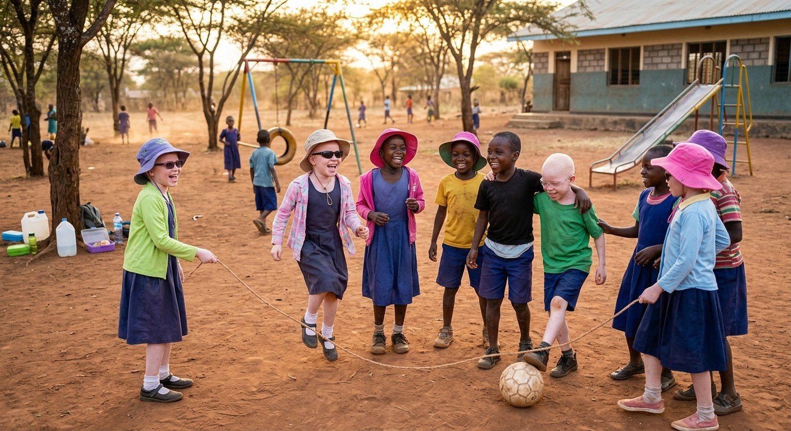
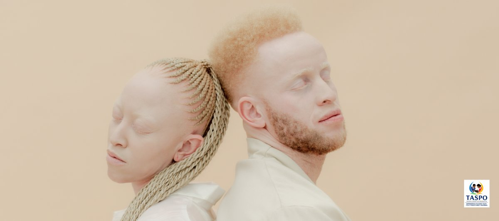
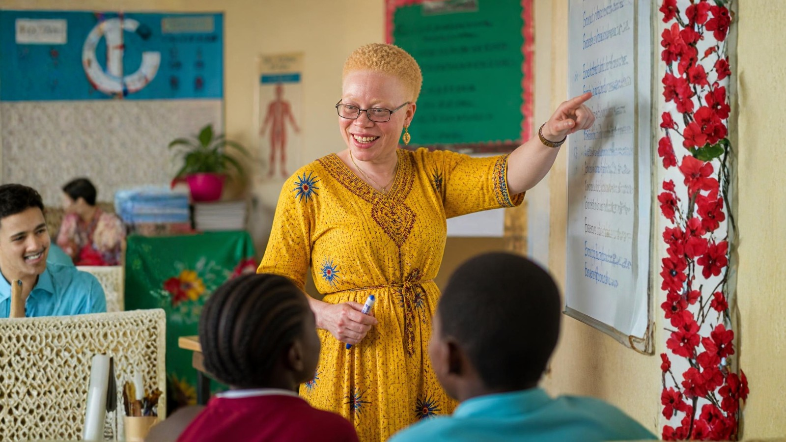

Albinism in Tanzania: A History of Suffering, Resilience and Hope
The real story of albinism in Tanzania — the discrimination, the danger, and the everyday impact on health and life, and how change is happening.
Read article →For a child with albinism in Tanzania, sunshine is something to guard against every day. What that means for their skin, their eyesight and their school day, and how 90,000 TZS can protect a child.

It is 7 o'clock in a Tanzanian village and the sun is already strong. Most children run to school in a T-shirt and shorts. But for Neema (not her real name), getting ready takes a little longer.
She pulls on long sleeves and long trousers, even though it will be over 30°C by lunchtime. She rubs sunscreen into her face, neck and hands. A wide-brimmed hat goes on, then sunglasses. Only then is she ready to step outside.
Neema has albinism. For her, the sunshine that the rest of us enjoy is something she must guard against every single day. This is what that really means for a child growing up in Tanzania.
Albinism is something a child is born with. It is passed down from both parents, who usually have no idea they carry it. It is not an illness, it is not contagious, and it is certainly not a curse.
In simple terms, the body makes little or none of the pigment called melanin. Melanin gives colour to our skin, hair and eyes. More importantly, it acts as the body's own natural sunscreen. Without it, the skin burns quickly and the eyes struggle to cope with light.
Tanzania has one of the highest rates of albinism in the world. Around 1 in every 1,400 people here has the condition, compared with roughly 1 in 17,000 worldwide. That means thousands of Tanzanian children face the same daily challenges as Neema.
Tanzania sits just below the equator. The sun here is fierce all year round, with no winter break to give the skin a rest. For a child without melanin, even a short walk to the well can mean painful sunburn.
The real danger is what happens over the years. Every burn damages the skin a little more. Bit by bit, that damage turns into rough patches, sores and, eventually, skin cancer. Many children with albinism in Africa already show early signs of sun damage before they reach their teens.
This is the hard truth: skin cancer is the number one killer of people with albinism in Tanzania. A report to the United Nations found that most die between the ages of 30 and 40. Some estimates put the average life expectancy at around 32 years, roughly half that of other Tanzanians.
Skin cancer is treatable when caught early. But many families live far from a hospital or a skin specialist. By the time help is reached, it is often too late. The Tanzania Albinism Society has warned that most of those who die live in rural areas with little access to care.
Now for the good news, and it is genuinely good: most of this is preventable. Protect the skin from childhood onwards and the risk drops dramatically. A hat, long sleeves and sunscreen are, quite literally, lifesavers.
Almost every child with albinism has weak eyesight. Again, it comes back to melanin. Pigment plays a key role in how the eye grows before birth, so without it the eye simply doesn't develop in quite the normal way.
In everyday terms, this means:
Glasses help some children, and sunglasses ease the glare. But nothing can fully fix the problem. Many children with albinism are classed as having low vision for life.
At school, this is a big deal. A child at the back of a dim classroom simply cannot read a chalky blackboard. Without being moved to the front, given large print or allowed to walk up to the board, they fall behind. And it is not because they aren't bright. They just can't see the lesson.
Because their eyesight is so weak, children with albinism have to bring their faces very close to the page to read or write. Often just a few centimetres away.
At a normal flat school desk, that means crouching right over it for hours every day. Head bent forward, shoulders hunched, back curved. It is hard work for a growing body, and it soon leads to neck pain, back pain, tired eyes and headaches. Over time, it can affect posture for life. And a child in pain finds it much harder to concentrate.
The fix is wonderfully simple: a slanted desk, or a sloping board that sits on top of an ordinary desk. Tilting the work surface brings the page up towards the eyes, instead of forcing the child down towards the page. They can sit up straighter, read in comfort and keep going through the whole school day.
It is a small, low-cost change. But for a child with albinism, it turns the classroom from a place of strain into a place where they can actually learn.
For most Tanzanian children, outdoor life is everything. Football at break time, walking to fetch water, helping on the family farm, playing with friends until dusk.
Children with albinism have to think twice about all of it. Their days are planned around the sun:
Living in the shade can feel lonely. It sets children apart at an age when they badly want to fit in. Sadly, people with albinism in Tanzania also still face stigma and old myths, which makes feeling included even harder. That is exactly why awareness and kindness from classmates, teachers and neighbours matter so much.
Protecting a child with albinism is surprisingly simple. It just has to happen every day, without exception. Here is what each child needs:
| Item | Why it matters |
|---|---|
| Wide-brimmed hat | Shades the face, ears and neck, where skin cancer most often starts |
| Long-sleeved shirts | Cover the arms, which take the full force of the sun |
| Long trousers | Protect the legs on the walk to school and while playing |
| Sunglasses (UV-protective) | Cut painful glare and protect fragile eyes |
| Sunscreen (high SPF) | Guards any skin that clothes can't cover, applied every morning and topped up during the day |
The total cost is about 90,000 Tanzanian shillings per child, which is roughly €30.
For many families in rural Tanzania, that is simply out of reach. Good sunscreen in particular is expensive and hard to find outside the big towns. So children go without, and the sun does its damage quietly, year after year.
To put it plainly: for around the price of a meal out in Europe, you can give a child the protection that may add decades to their life.
At TASPO, we believe every Tanzanian child deserves the chance to learn, play and grow up safely. For children with albinism, that starts with protection from the sun and a fair chance to see the lesson.
Here is how you can make a difference today:
One hat. One bottle of sunscreen. One pair of sunglasses. It sounds small, but for a child like Neema it can mean a longer, healthier and happier life.
Donate now or contact us at support@taspo.org. Read more about TASPO's albinism awareness work.
No. Albinism is inherited from both parents. You cannot catch it.
Around 1 in 19 Tanzanians is thought to carry the gene without knowing it. When two carriers have a child, there is a one-in-four chance the baby will have albinism.
Glasses can help, but they can't fully correct it. Sunglasses, large print and sitting near the front of class make a real difference.
Mainly because of skin cancer caused by years of strong sun. Many die between 30 and 40, but daily sun protection from childhood can greatly reduce that risk.
About 90,000 TZS per child (roughly €30), covering a wide-brimmed hat, long sleeves, long trousers, sunglasses and sunscreen.

The real story of albinism in Tanzania — the discrimination, the danger, and the everyday impact on health and life, and how change is happening.
Read article →
Why teachers with albinism are hit hardest by chalk and blackboards, and how swapping to whiteboards removes one of their biggest daily obstacles.
Read article →Whether you give, partner, donate equipment or simply share our story, you help Tanzanian students learn in better conditions.